Chapter 24. SMS reporting and teams
Short Message Service (SMS) reporting is a novel feature that allows Early Warning, Alert and Response System (EWARS) Reporting Users to send reports via the SMS function. This is useful if a 3G or 4G data connection is not available, and reports cannot be sent using the more typical data function of the mobile phone. This does not mean that Reporting Users have to type an SMS, as the name might seem to imply. Rather, EWARS automatically converts a regular report into an SMS for transmission. EWARS Web receives the report just like any other report sent via a data connection (Fig. 24.1).
Fig. 24.1. Overview of the SMS reporting workflow
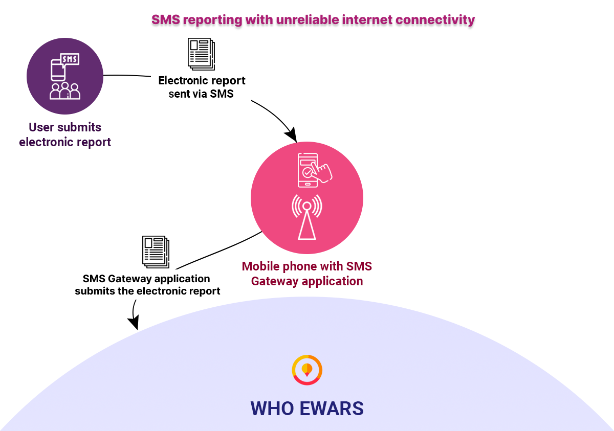
SMS reporting can be enabled for an entire country or a particular group of users, depending on the context and requirements. Enabling SMS reporting for a particular group of users is achieved using the teams feature. SMS reporting functions as an intermediary medium, facilitating reporting between EWARS Mobile and WHO EWARS. EWARS facilitates the creation of teams, and enables users to be added to them. A team is defined as a set of users that can be grouped based on a common goal and activity.
 The te The te |
ams feature is primarily used here for SMS reporting. For contexts where the data connection is too weak for regular mobile reporting, however, the teams feature is also used for other purposes. |
In environments such as remote areas, conflict-affected areas or areas with poor infrastructure support, the reporting users collect all the reporting data and submit reports via SMS, relayed via the SMS Gateway application (app) (Fig. 24.2).
Fig. 24.2. EWARS reporting using the SMS Gateway app

For more information, refer to Chapter 1. Overview of EWARS in a box, topic 1.2 EWARS components and their deployment in various scenarios.
24.1 Setting up SMS reporting
SMS reporting can be enabled for an entire country or a particular group of users (a team).
If SMS reporting is enabled for the entire country, you only need to set up a single SMS Gateway account, and all the SMS messages are relayed using that account. If SMS reporting is enabled for specific teams, you need to set up multiple SMS Gateway accounts: one per team. Multiple gateways are needed, for instance, when high volumes are expected, and multiple phone numbers need to be used for receipt to spread the load.
Each of these scenarios is addressed below.
24.1.1 Setting up SMS reporting for the entire country
The process of setting up SMS reporting for the entire country can be best understood via the flowchart below (Fig. 24.3).
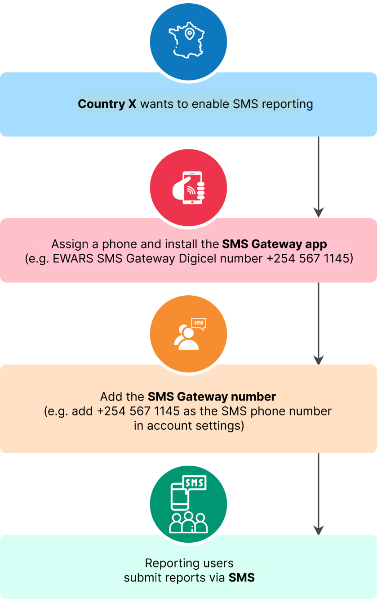
Fig. 24.3. SMS reporting flowchartAs shown above, Country X wants to enable SMS reporting. For this, it needs an SMS Gateway account, which is, in practice, a mobile phone dedicated to performing this function. The SMS Gateway app is installed on that phone; it is placed in a safe location with good signal and kept plugged in so that it will not run out of charge or go to sleep. The phone’s job is effectively to relay messages to WHO EWARS. All Reporting Users can submit reports via SMS.
24.1.2 Setting up SMS reporting for a team
The process of setting up SMS reporting for a team can be best understood via the flowchart below (Fig. 24.4).
Fig. 24.4. SMS reporting for a team flowchart
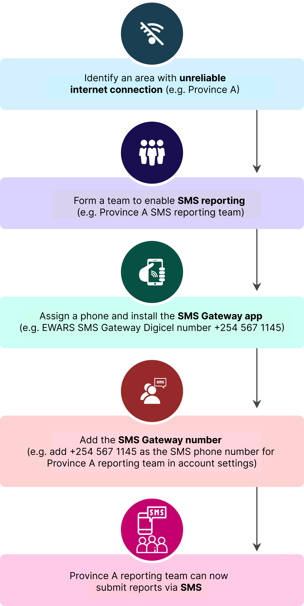
As shown above, you need to identify the team that needs SMS reporting enabled for an area with an unreliable internet connection. Assign an SMS Gateway number to a mobile phone with the SMS Gateway app installed for the team. The team can then submit reports via SMS.
| If you |
have different mobile service providers in different areas, you may need different SMS Gateway accounts, depending on the provider. |
24.2 Setting up the SMS Gateway app
For EWARS to receive reports via SMS, an SMS Gateway account should be created. This is a dedicated Android phone with the EWARS SMS Gateway app activated. The phone must be placed in an environment with internet or Wi-Fi at all times. Ideally, it needs to be set up at the central surveillance office that receives reports. The SMS Gateway phone needs an activated SIM card from a telecommunication provider that has coverage in the area of concern, such as Vodafone, Digicel or Airtel. The phone, once activated, needs to be kept on charge at all times. If all these requirements are met, it will act as an SMS Gateway account to relay reports.
In summary, the SMS Gateway account is a mobile phone that is always on, to which SMS messages can be sent by EWARS users.
The SMS Gateway app receives reports submitted by Reporting Users via SMS and sends them to WHO EWARS over the internet connection.
 Note: you can have multiple SMS Gateway accounts to receive reports via different telecommunication providers. However, most emergency settings are covered by a limited number of providers, so you may be able to manage with just one or two SMS Gateway accounts. Note: you can have multiple SMS Gateway accounts to receive reports via different telecommunication providers. However, most emergency settings are covered by a limited number of providers, so you may be able to manage with just one or two SMS Gateway accounts. |
To set up an SMS Gateway account, follow the steps below.
Step 1 [Mandatory].
Assign an Android phone with operating system version 6.0 Marshmallow or higher to be the SMS Gateway phone.
Procure and insert a SIM card from an appropriate telecommunication provider (e.g. Digicel).
The phone must have an active internet data connection and an active SMS plan to receive SMSs. This phone should only be used as an SMS Gateway phone. No reporting should be performed using this phone.
The phone should be plugged into a power source to be charging at all times.
| Choose |
the best mobile plan by considering factors like internet usage, SMS plans and network coverage. It is recommended to have 3G or 4G network coverage. |
Step 2. Download the SMS Gateway app on the mobile phone, using one of the following options.
Either open the following link in the mobile browser, and the app is downloaded: https://ewars.ws/static/apps/ewars-sms.apk
Or download the SMS Gateway Android application package (APK), which is available in EWARS Web. To download it, go to EWARS Web > select Menu > Downloads, and the following screen appears:
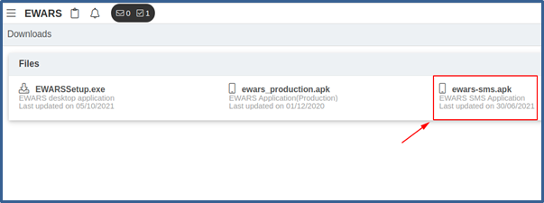
- Click on ewars.sms.apk and the APK is downloaded onto your laptop/desktop. Copy it to the Downloads folder of your mobile phone, as shown below:
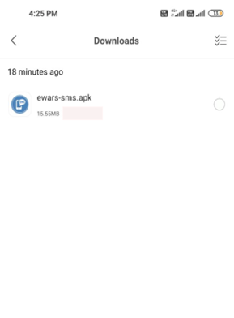
Step 3. Allow installation of the app from an unknown source.
- Navigate to your phone’s Settings menu and then to Security & Privacy settings. Tap on Install unknown apps. Enable the toggle button for Allow from this source, as shown below:
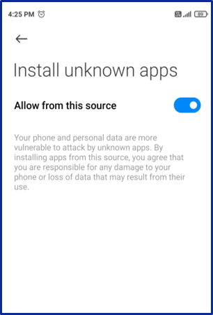
| Note: the option to allow installation of an app from an unknown source may appear differently on your mobile phone, based on the operating system version and the model. Enable the relevant option, based on how and where it appears on your mobile phone. |
Step 4. Install the SMS Gateway app.
- Tap the file manager icon > navigate to your Downloads folder > tap the SMS Gateway APK file > tap to install and follow the on-screen instructions. The app is installed and is available on the home screen, as shown below:
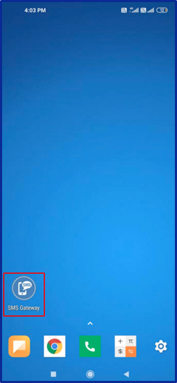
Step 5. Obtain credentials for logging in to the SMS Gateway app.
The SMS Gateway app is password protected, so you need to obtain credentials to allow you to log in to it.
Go to EWARS Web.
Select Menu > Administration > Third Party Clients, and the following screen appears:
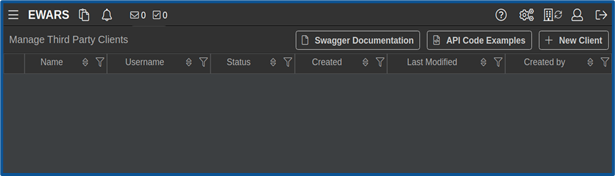
- Click on
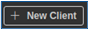
, and the following screen appears:
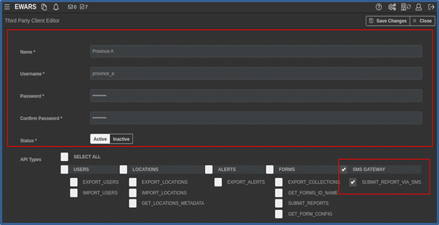
Enter the Name (e.g. “Province A”).
Enter your preferred Username for the SMS Gateway app (e.g. “province_a”).
Enter a Password (minimum 8 characters and maximum 15 characters) (e.g. “Mcv63edx”) > re-enter the password for confirmation.
Keep Status as Active.
Set API Types as SMS GATEWAY.
Click on Save Change(s).
The third-party client is created with the credentials provided, and the credentials are ready to use in the SMS Gateway app.
Step 6. Log in to the SMS Gateway app.
Start the SMS Gateway app by tapping the SMS icon on your mobile phone.
When prompted, allow access to send and view SMSs.
When prompted, tap on Set as Default to set the SMS Gateway app as your default SMS app.
The app opens, and the login screen appears, as shown below:
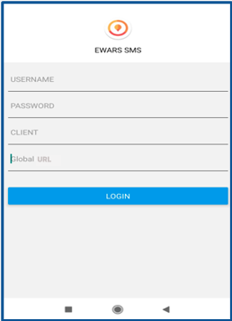
- Enter your USERNAME and PASSWORD > enter “tp-client-global” as the CLIENT > enter https://ewars.ws as the Global URL.
| Note: the client and global universal resource locator (URL) entered are standard for every SMS Gateway account. |
- Tap on LOGIN, and the following screen appears:
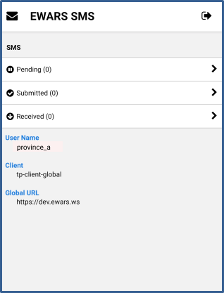
You have now created an SMS Gateway account successfully under a mobile number. The following topics illustrate how to enable SMS reporting for an entire country or a team.
24.3 Enabling SMS reporting for an entire country
If SMS reporting is enabled for the entire country, you need only one SMS Gateway account that can be used by all users, and only one SMS Gateway number. When any Reporting User reports via SMS, that report will automatically go through the dedicated SMS Gateway number. This SMS Gateway number needs to be added to the account settings in EWARS Web, as set out below.
Step 1. Set up the SMS Gateway app for the entire country as explained in topic 24.1.1.
Step 2. Add the SMS Gateway number in account settings, as shown below:
- Click on the settings icon at the top right-hand corner > click on , and the screen below appears:
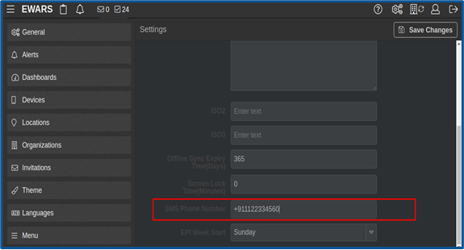
- Enter the mobile number of the SMS Gateway in the SMS Phone Number field > click on Save Change(s).
SMS reporting is now enabled, and any Reporting User in the country can switch to SMS reporting using the SMS Gateway number when data connectivity is poor.
24.4 Enabling SMS reporting for a team
The teams feature should be used if SMS reporting is required for a particular group of users. A team needs a dedicated SMS Gateway number. Therefore, you need to create a team, add Reporting Users who require SMS reporting and add the SMS Gateway number in the team configuration.
If there are multiple areas with poor internet connection that are covered by multiple telecommunication partners in your context, EWARS allows you to create multiple teams to fulfil the reporting needs (e.g. Province A reporting team with Airtel SMS, Province B reporting team with Vodacom SMS, and so on).
Follow the steps below to enable SMS reporting for Province A reporting team.
Step 1. Set up the SMS Gateway app for Province A reporting team.
Step 2. Create Province A reporting team.
- Select Menu > Administration > Teams Management. Click on , and the screen below appears:
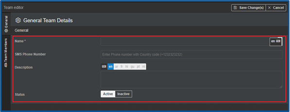
Enter a unique Name for the team (e.g. “Province A reporting team”).
Enter the SMS Phone Number (e.g. “+254 567 1435”). This is the phone number of the device on which the SMS Gateway app is running.
Enter a Description for the team.
Keep the Status set as Active.
Step 3. Add members to the team
- Click on the Team Members tab at the left-hand side, and the screen below appears:
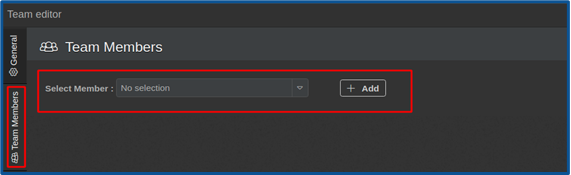
The Select Member drop-down menu contains all users under your account. Select the users who need the SMS reporting feature to form a team.
Select each Reporting User to be added as a team member from the Select Member drop-down menu.
Click on > click on Save Change(s), and the team is created with the members.
| Note: if there are two different SMS phone numbers, wherein one is set up in the team configuration and another set up for the entire country, the number in the team configuration is used in preference for reporting. For example, a common Digicel number +111 234 5678 is set up for the whole country (under account settings), and Province A reporting team Digicel number +111 321 4567 is set up under the team configuration. When Province A reporting members submit reports via SMS, the former Digicel number +111 321 4567 is used. |
| There |
is no requirement to key in the SMS Gateway number from the Reporting Users’ phones. The selected SMS Gateway and its number are already configured when you create the team. The system will automatically know which SMS Gateway number to use for report submission. |
24.5 Adding members to an existing team
Follow the steps below to add members to an existing team.
- Select Menu > Administration > Teams Management, and a screen listing all existing teams (if any) appears, as shown below:
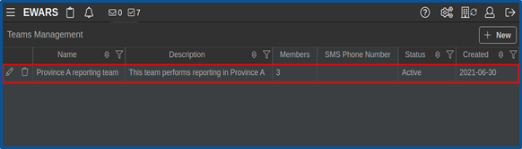
- Click on the edit icon of the desired team (e.g. Province A reporting team) > click on the Team Members tab at the left-hand side, and the screen below appears:
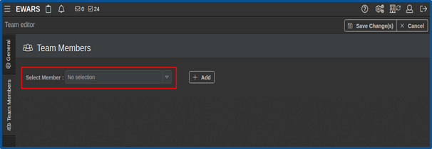
Select a user to be added as a team member from the Select Member drop-down menu.
Click on
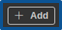
> click on Save Change(s), and the team member is added.
24.6 Removing a member from a team
To remove a members from a team, follow the steps below.
Select Menu > Administration > Teams Management. Click on the edit icon of the desired team (e.g. Province A reporting team). Click on the Team Members tab at the left-hand side > click on the delete icon.
Click on Save Change(s), and the team member is removed.
24.7 Deleting a team
- Select Menu > Administration > Teams Management > click on the delete icon. Click on Confirm, and a notification appears that the team is deleted.
24.8 SMS Gateway monitoring
The SMS Gateway app receives EWARS reports submitted via SMS and sends them to WHO EWARS over an internet connection as regular online reports.
The app monitors the number of reports received from Reporting Users and the number of reports submitted to the WHO EWARS server, as shown below:
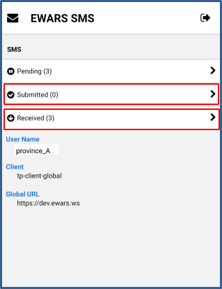
The SMS Gateway app also show the number of pending reports. These are SMSs that have been received but have not yet been submitted to the WHO EWARS server. The number of reports held at the pending stage depends on the internet connection. The app will automatically process and send the SMSs to the WHO EWARS server when the data connection is available. The SMSs will remain pending until an internet connection is available.
After a specific interval, there is a need to clear the queued SMSs to optimize phone storage.
The total number of the SMSs received by the SMS Gateway app is calculated as follows:
Total received SMSs = pending SMSs + submitted SMSs
All the other SMSs – such as those from the telecom service provider and regular notifications – remain pending and should all be deleted.
You can tap on any SMSs listed as pending, submitted or received to view the details.
- Tap on Submitted and report details including Status, Received From, Received Date, Submitted Date and other Data appear, as shown below:
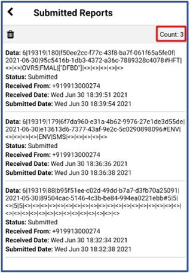
- To delete the reports, tap the delete
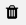
icon at the top left-hand corner, and a confirmation box appears. Tap Yes. Deleting SMSs listed under Submitted deletes all SMSs that have been submitted.
You can also delete SMSs listed as received or pending, depending on your requirements. Those SMSs that are redundant or that have been received from other SMS providers or other sources and are not relevant to WHO EWARS can be deleted.
The following chapter explores the EWARS Stand-alone app, which helps you perform mobile reporting in difficult environments.